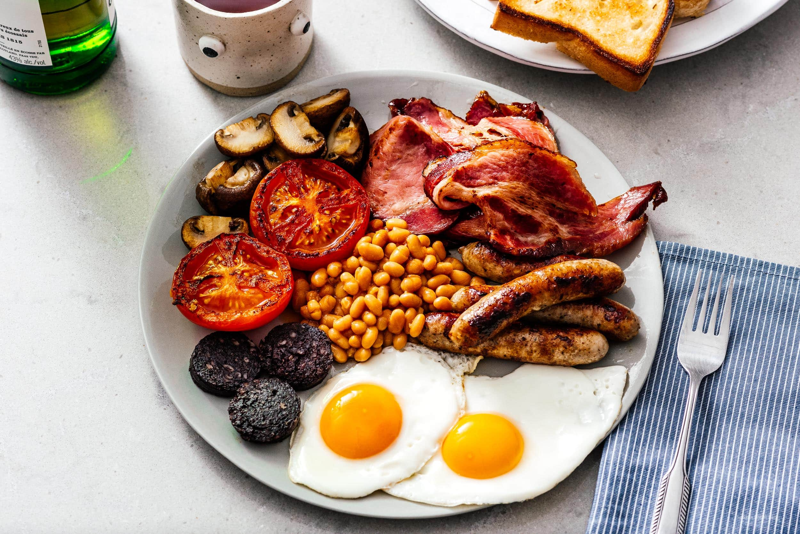
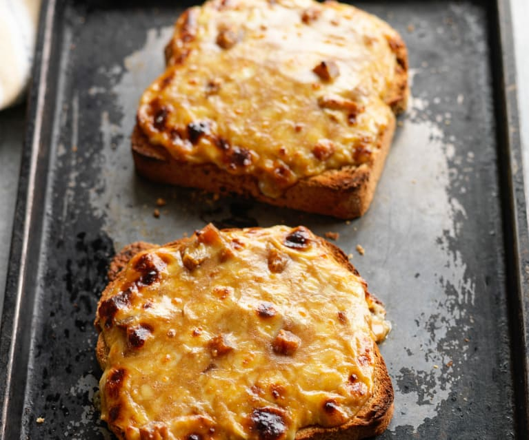
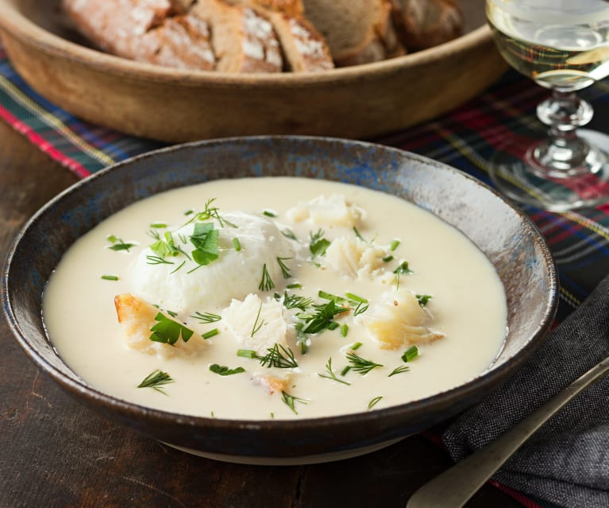
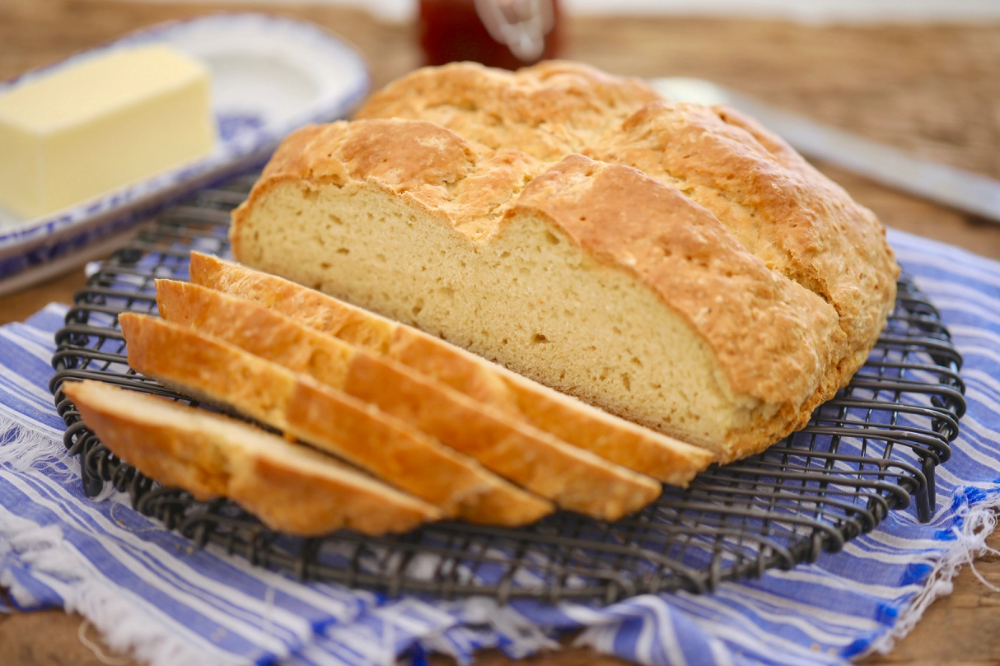
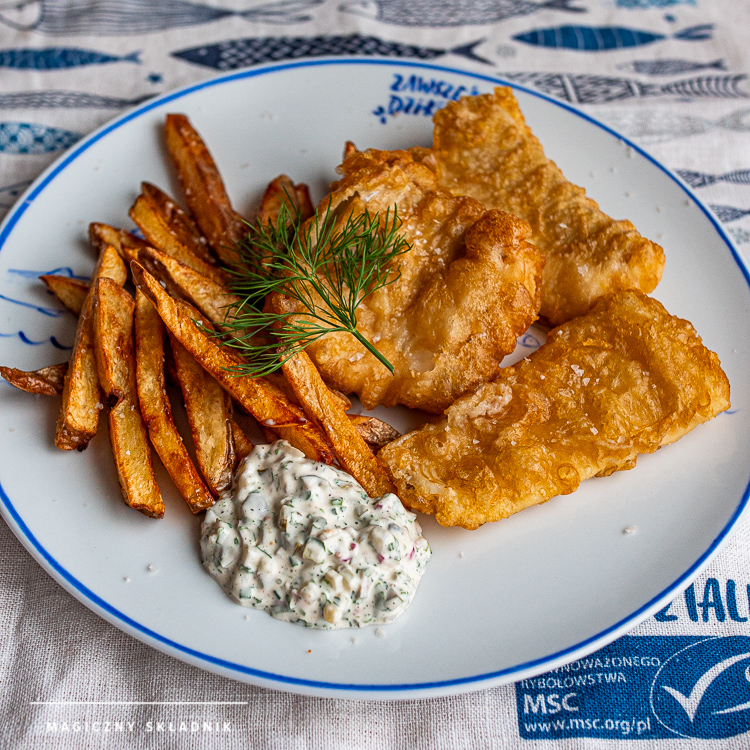
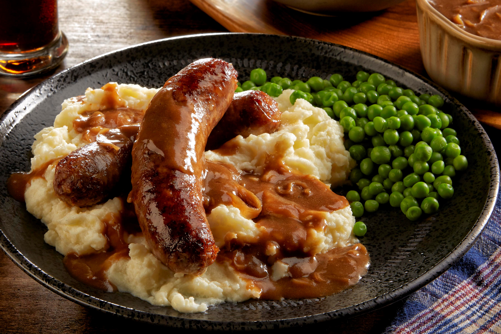

Wybierz kraj, o kótrego potrawach chcesz się dowiedzieć:




Fish and Chips
ryba z frytkami, potrawa popularna zwłaszcza w regionach nadbrzeżnych, ale znana i kochana w całej Anglii

Banger and Mash
Bangers and mash – potrawa kuchni angielskiej, w której skład wchodzą kiełbaski (bangers) i porcja tłuczonych ziemniaków (mash). Danie przyrządzane jest z kiełbas wieprzowych (w szczególności Cumberland sausage), wołowych lub jagnięcych. Jako dodatek często stosuje się sos cebulowy. Bangers and mash jest popularnym daniem serwowanym w brytyjskich pubach.

Walia!
ryba z frytkami, potrawa popularna zwłaszcza w regionach nadbrzeżnych, ale znana i kochana w całej Anglii
Scotland Forevaaaaa!
ryba z frytkami, potrawa popularna zwłaszcza w regionach nadbrzeżnych, ale znana i kochana w całej Anglii
Irlandia!
ryba z frytkami, potrawa popularna zwłaszcza w regionach nadbrzeżnych, ale znana i kochana w całej Anglii